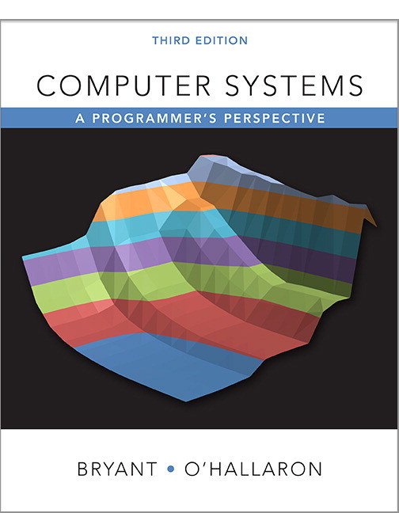
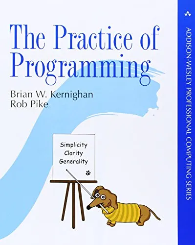
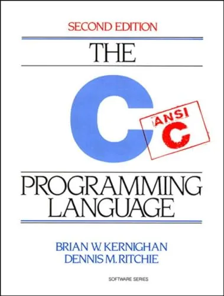
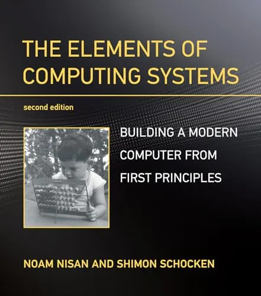

Computer Systems: A Programmer's Perspective
Randal E. Bryant e David R. O'Hallaron — introdução à forma como programas interagem com hardware, cobrindo arquitetura de computadores, memória, sistemas operacionais e desempenho.

Randal E. Bryant e David R. O'Hallaron — introdução à forma como programas interagem com hardware, cobrindo arquitetura de computadores, memória, sistemas operacionais e desempenho.

Brian W. Kernighan e Rob Pike — técnicas práticas para escrever programas mais eficientes, legíveis e confiáveis, com foco em design, testes, depuração e manutenção de código

Brian W. Kernighan e Dennis M. Ritchie — referência clássica da linguagem C, abordando seus fundamentos, recursos avançados e boas práticas de programação.

Noam Nisan e Shimon Schocken — abordagem completa da construção de um computador moderno, desde portas lógicas e arquitetura de hardware até sistemas operacionais e compiladores.